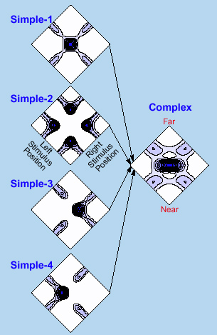
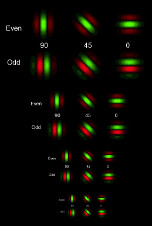

Izumi Ohzawa
Department of Biophysical Engineering, Graduate School of Engineering Science,Binocular vision endows the visual system of humans and animals an exceptional ability to construct models of the external world in three dimensions based on a pair of flat (2-D) retinal images. The disparity energy model we have proposed (Fig. 1: Ohzawa et al. 1990, 1997) has proven to be an excellent model for first stage of binocular information processing that begins in the primary visual cortex. Recent studies have shown that quantitative predictions of the energy model (Fig. 2) are in excellent agreement with experimental results for both the cat and the monkey.
Binocular information encoding that employs the energy model construction is not limited to describing detection and encoding of binocular disparities. It is also a straight-forward and natural extension of monocular image encoding based on an image pyramid representation using Gabor-like receptive fields (Fig. 3). Furthermore, these neurons also encode information about motion of objects in the visual world jointly with binocular disparity (Anzai et al. in press, 2001)
Our research conducted as a part of the NRV project explores mechanisms that follow these first-stage processing, by sequentially progressing along the visual signal stream into the higher-order areas of the visual cortex.
|
 Fig.2 |
 Fig.3 |